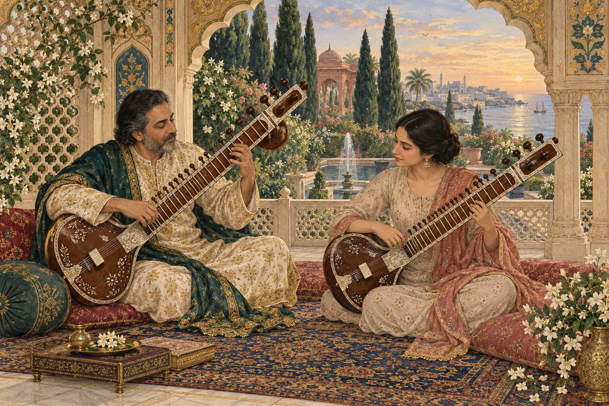

01
First Strings
A patient foundation for complete beginners: sitting, tuning, mizrab and your first phrases.
کراچی Sitar lessons in Karachi
Enter a living tradition through patient guidance, deep listening and the quiet discipline of riyaaz.

01 The first note
Sitar is not learned by rushing. We begin with posture, touch and one resonant note—then build a musical language around it.
Meet the instrument“Between the pluck and the echo, attention becomes music.”
02 Meet the instrument
Each string carries a different colour—from the bright pulse of chikari to the resonant depth of kharaj. Touch them to hear their character.
Plate II · four voicestouch to listen
Sound plays only when you touch a string.

03 The lesson
Every class balances craft with expression. You leave knowing what to practise—and why it matters.
04 Ways to learn
Begin from silence or return with experience. The path is shaped around your ear, your hands and the time you can truly give.
A patient foundation for complete beginners: sitting, tuning, mizrab and your first phrases.
One-to-one study shaped around your technique, musical taste and personal practice.
An intimate listening and playing circle for students ready to explore raga together.
05 A cycle you can feel
Tintal turns like a wheel. Let the rhythm travel home to sam—the first beat and the point of return.
16 matras arranged in four equal divisions
06 The quiet practice
We teach adults and young learners with warmth, rigour and no performance pressure. Progress begins when the instrument feels like a place you want to return to.
07 Begin in Karachi
Tell us where you are in your musical journey. We’ll help you choose the right starting point.